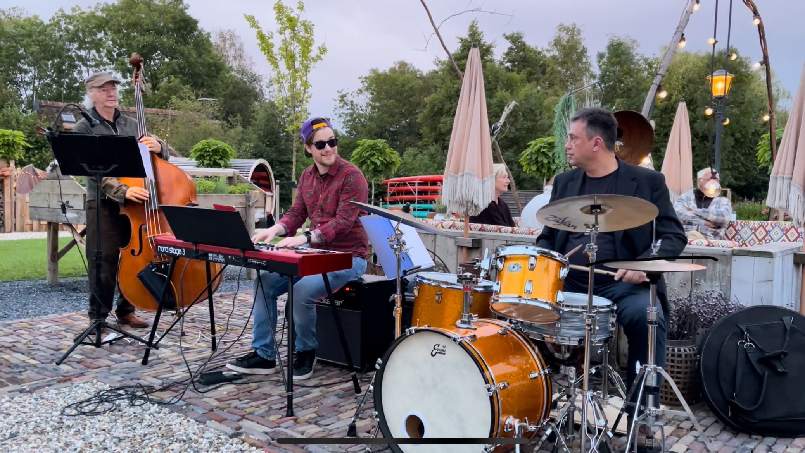
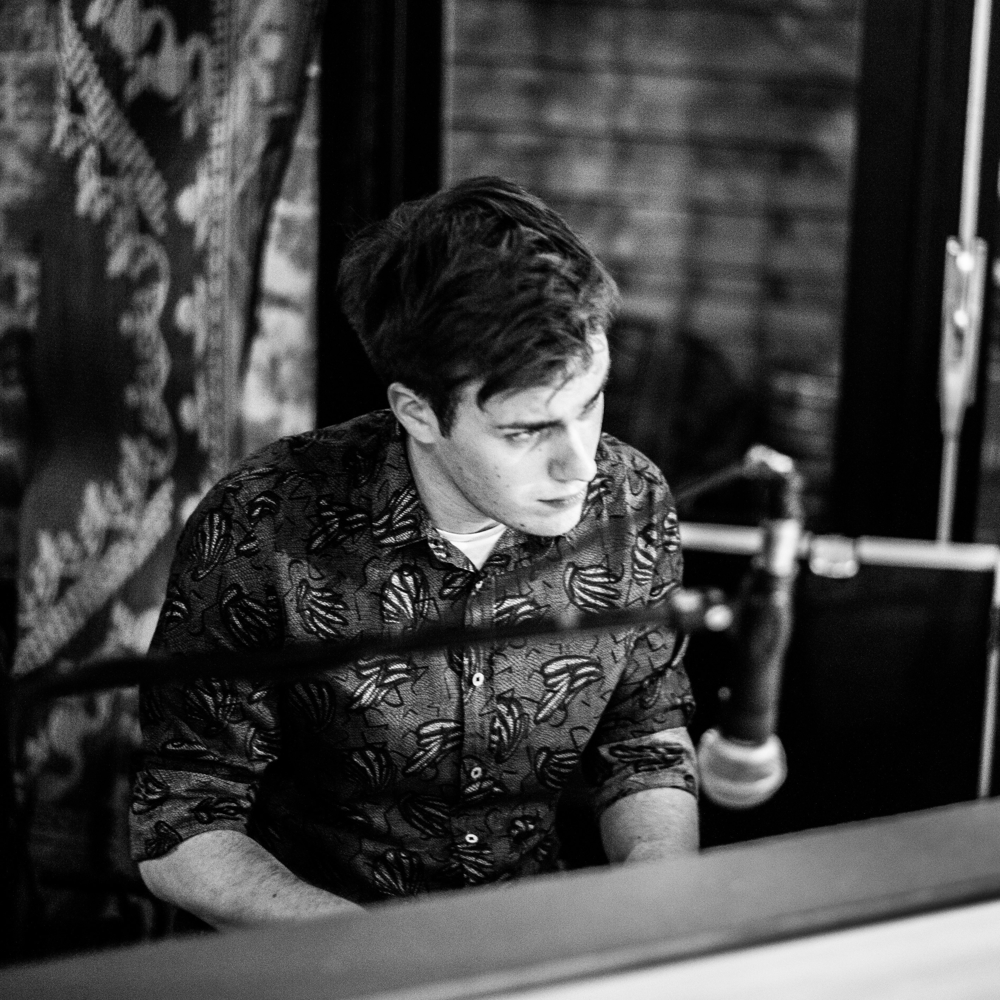

Instagram video
Bekijk op Instagram

Amsterdamse jazzband
KRAK!
De Amsterdamse jazzband KRAK! bestaat uit tenorsaxofoon, toetsen, contrabas en drums. Het kwartet speelt een eigenzinnige selectie van swing, bebop en fusion met nieuwe arrangementen.
Media
Foto's en video's.
Instagram video
[Link volgt]
Instagram video
[Link volgt]

De groovy klank van KRAK!
Jazz met een eigen draai.
De Amsterdamse jazzband KRAK! bestaat uit tenorsaxofoon, toetsen, contrabas en drums.
Het kwartet speelt een eigenzinnige selectie van swing, bebop en fusion, met muziek van grootheden als Duke Ellington, Thelonious Monk, Herbie Hancock, Bud Powell en Roy Hargrove. Met nieuwe arrangementen geeft de groep een eigen draai aan bekende werken. KRAK! speelt sinds 2019 samen. Ze hopen u mee te nemen op een muzikale ontdekkingstocht vol verrassing en verwondering.
KRAK! trad onder meer op in de Jazzkelder (UJazz) te Utrecht, op het Rietfestival Kalenberg, bij Jazzcafe De Pianist in Amsterdam (onder de eerdere naam The Flying Dutchmen) en bij Cafe Quelle in Amsterdam.
De musici zijn van uiteenlopende leeftijd en hebben een rijke speelervaring. Ze passen zich gemakkelijk aan bij de gevraagde setting. KRAK! is uitermate geschikt voor uw evenement, kleinschalig concert of festival.
Repertoire
- Pat Metheny
- Thelonious Monk
- Herbie Hancock
- Bud Powell
- Roy Hargrove
Geschikt voor
- Jazzclubs en concertzalen
- Evenementen en diners
- Festivals en buitenpodia
- Luisterconcerten en jams
Band
Het kwartet.
Klik op een naam voor foto en korte bio.

Foto volgt
Uitgelicht
Tommy Maaiveld
Toetsen
[Korte bio van Tommy.]
Optredens
Vaste en komende data.
Elke eerste donderdag van de maand spelen we ons vaste optreden. Andere data volgen op aanvraag of via aankondigingen.
Elke eerste donderdag van de maand
Cafe Quelle
[Datum]
[Locatie of festival]
[Datum]
[Besloten evenement]
Beschikbaar voor evenementen, kleinschalige concerten en festivals.
Contact
Boekingen en info.
Boekingen
Email
[emailadres]
Telefoon
[telefoonnummer]
Contactpersoon
[naam]
Sociale media
Instagram
[instagram]
Overige kanalen
[link volgt]